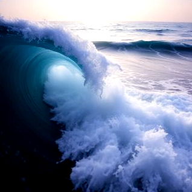

LYRICS
[Verse 1 - Man]
The cargo deep within her hold
Lake waves grow fierce this bitter night
November tenth, the storm takes hold
I strain to see the beacon's light
[Verse 2 - Woman]
November tenth, I watch and wait
Our children rest in peaceful sleep
I search beyond the harbor gate
Your ship upon these waters deep
[Chorus - Man]
Ring the bell for twenty-nine
(Woman: Let the deep bells sound)
For the Edmund Fitzgerald's line
(Woman: And all souls outward bound)
For all who sailed and did not return
For all who wait in prayer
Let the bell's song ever burn
As we remember them with care
[Verse 3 - Man]
No word comes through the radio
The ship's steel heart moans in the gale
These waters fierce, these waters cold
Against the wind, we forge our trail
[Verse 4 - Woman]
I stand beside the window pane
Where endless waves stretch far and wide
Some bonds endure through wind and rain
Some love runs deeper than the tide
[Chorus - Man]
Ring the bell for twenty-nine
(Woman: Through the darkness sound)
For the Edmund Fitzgerald's line
(Woman: And every sailor found)
For all who sailed and did not return
For all who wait in prayer
Let the bell's song ever burn
As we remember them with care
[Bridge - Man]
The waves rise high
[Bridge - Woman]
The night grows long
[Bridge - Both]
The water knows our prayer
The water bears us home
[Chorus - Both, softly]
Ring the bell for twenty-nine
Let the deep bells sound
For the Edmund Fitzgerald's line
And all souls outward bound
For all who sailed and did not return
For all who wait in prayer
Let the bell's song ever burn
As we remember them with care
[Outro - Woman]
Year by year, the bell still rings
For those who sailed beneath the stars
For those who keep the watch today
[Outro - Man]
For those who wait
[Outro - Both]
And pray
[Final lines - Both]
Rest gentle now beneath the waves
While we remember all your days
As memories of you remain The Captain's Watch

LYRICS
November tenth, they set out at dawn
The Edmund Fitzgerald, before she was gone
Twenty-nine men on a freighter's deck
Their final journey, we won't forget
Verse 2
The captain stood at the wheel that night
Superior roared with all her might
He'd seen rough water, he'd seen it calm
But this was different, this was wrong
Chorus
And the waves rise up like mountains tall
And the brave men answer when the deep water calls
We remember them, every soul so dear
Forever sailing through the years
(Through the years)
(We remember)
Verse 3
He radioed in, said they were taking on
The storm came fast, then the lights were gone
Some say she broke, some say she rolled
All we know is the water's cold
Verse 4
They were fathers, brothers, working men
Doing their job till the very end
The captain knew when he set that course
Some things you can't turn back from, by force
Chorus
And the waves rise up like mountains tall
And the brave men answer when the deep water calls
We remember them, every soul so dear
Forever sailing through the years
(Through the years)
(We remember)
Bridge
For every sailor who won't come home
For every vessel out there alone
From the Great Lakes down to the ocean wide
We keep your memory, we keep your pride
Verse 5
Each November tenth, we bow our heads
For the living and for the dead
The lake still holds what she took that day
But their names won't wash away
Final Chorus
And the waves rise up like mountains tall
And the brave men answer when the deep water calls
We remember them, every soul so dear
Forever sailing through the years
(We remember them)
(Every one)
(Through the years)
Outro
November tenth, year after year
We gather here to hold them dear
Rest easy, captain, rest easy, crew
The watch is ours, we'll see it through
Remember November 10
LYRICS
Acoustic guitar intro
Verse 1
I'm still here beneath the surface
Where the cold runs through my bones
Twenty-nine souls went silent
When Superior claimed her own
I can feel the water rising
Like it happened yesterday
November wind still howling
Won't let the memory fade away
Pre-Chorus
We were fighting through the darkness
We were holding to the rail
Brotherhood was all we carried
When the storm began to wail
Chorus
Remember November ten
When the lake took the bravest men
Every sailor knows the price
Out there on the edge of sacrifice
So we honor those who fell
In the deep where heroes dwell
Ring the bell for them tonight
Remember November ten
Verse 2
I've watched a thousand sunsets
Paint the water red and gold
Every ship that passes over
Carries stories never told
There's a weight in every voyage
There's a risk in every run
But we answer to the calling
Till our final race is done
Pre-Chorus
We were brothers to each other
We were faithful to the end
Now I'm waiting in the water
For the day we sail again
Chorus
Remember November ten
When the lake took the bravest men
Every sailor knows the price
Out there on the edge of sacrifice
So we honor those who fell
In the deep where heroes dwell
Ring the bell for them tonight
Remember November ten
Bridge
Stand at the shore
Raise your hand to the sky
Ring the bell once more
Keep the vigil alive
We're not just ghosts in the waves
We were living, we were brave
And we're still here
Chorus
Remember November ten
When the lake took the bravest men
Every sailor knows the price
Out there on the edge of sacrifice
So we honor those who fell
In the deep where heroes dwell
Light a flame that won't grow dim
Remember November ten
Outro
Remember November ten
(Remember November ten)
Remember November ten
Fade with acoustic guitar